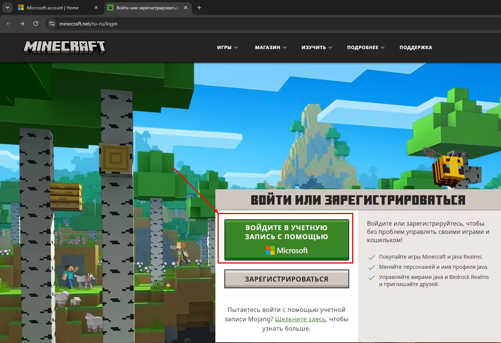
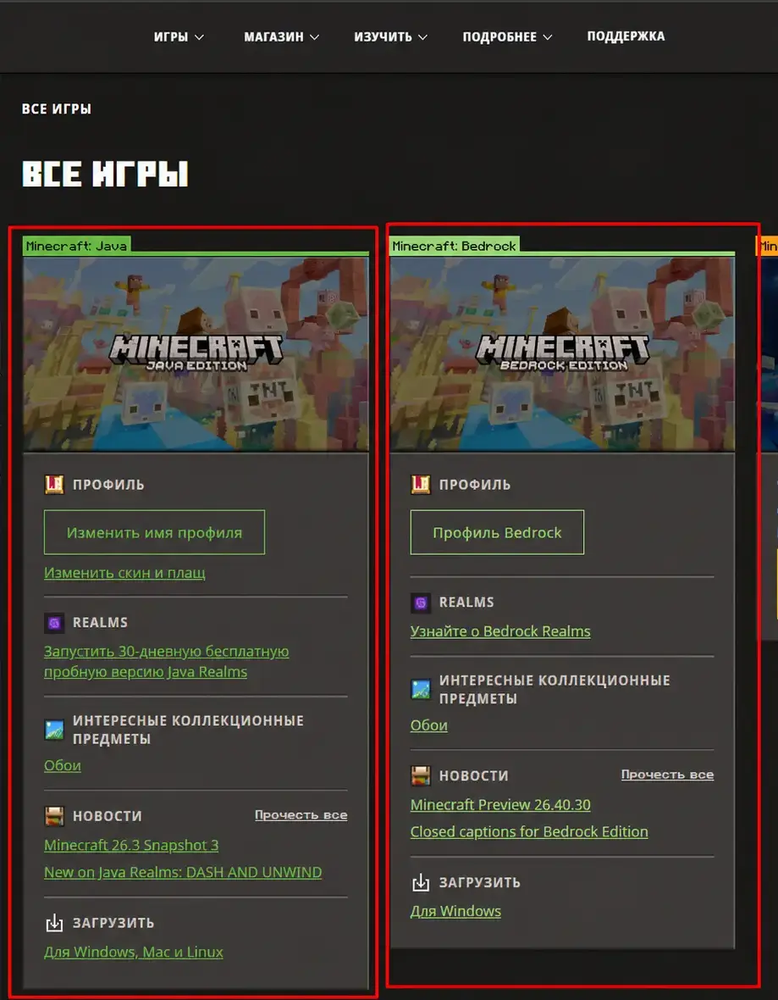
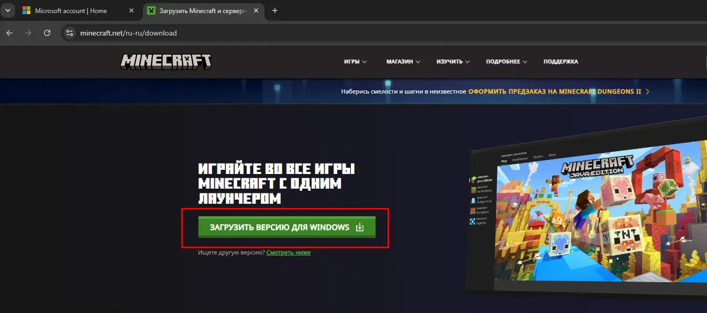
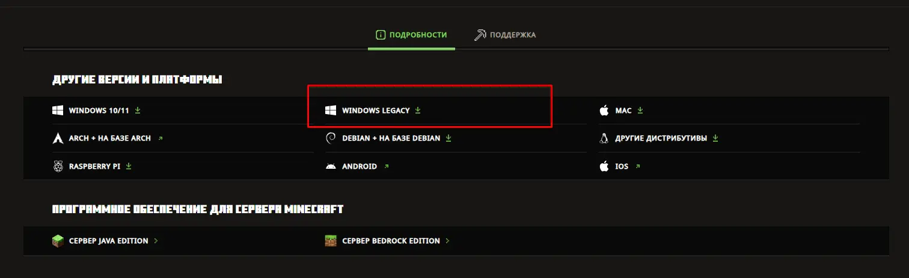
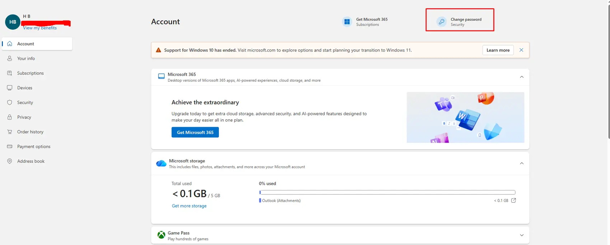

ШАГ 01
Войдите на сайт Minecraft
Перейдите на minecraft.net и нажмите «Войти в учётную запись с помощью Microsoft».
Используйте данные, полученные в чате заказа.

Проверьте лицензию, войдите в Microsoft Store и установите подходящую версию Minecraft Launcher.
Если сервисы Microsoft или Minecraft не открываются без VPN, используйте его только при необходимости и на свой страх и риск. Не меняйте страны и серверы во время одной авторизации.
В Microsoft Store и Minecraft Launcher должна быть выбрана одна и та же почта с лицензией. Windows часто автоматически подставляет старый аккаунт.
Перейдите на minecraft.net и нажмите «Войти в учётную запись с помощью Microsoft».
Используйте данные, полученные в чате заказа.

После входа откройте раздел «Все игры». На аккаунте должны отображаться:

Найдите Microsoft Store через меню «Пуск», откройте профиль и войдите по данным из чата заказа.

Откройте minecraft.net/download и сначала попробуйте обычную версию для Windows.
После загрузки запустите установочный файл.

На странице загрузки нажмите «Ищете другую версию? Смотреть ниже».
В разделе «Другие версии платформы» выберите Windows Legacy.

Запустите Minecraft Launcher и авторизуйтесь через Microsoft по данным из чата.
После правильной авторизации можно устанавливать и запускать Java или Bedrock Edition.

Перейдите на account.microsoft.com, авторизуйтесь и нажмите «Изменить пароль» на главной странице аккаунта. Далее следуйте указаниям Microsoft.

Если сервисы Microsoft или Minecraft не открываются без VPN, используйте его только при необходимости и на свой страх и риск. Не меняйте страны и серверы во время одной авторизации.